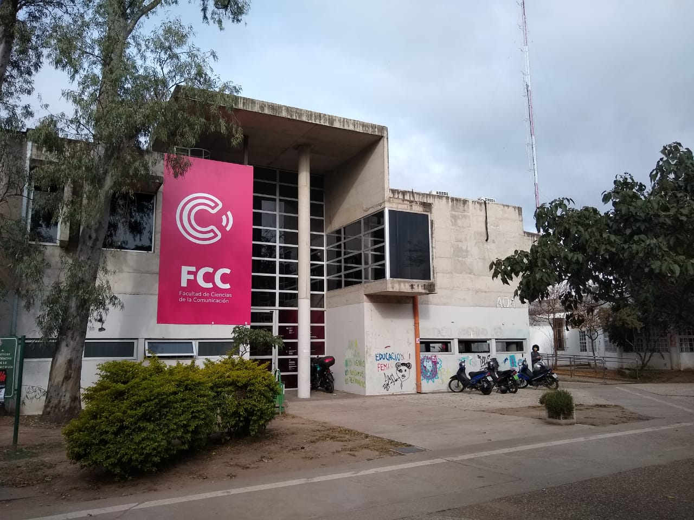
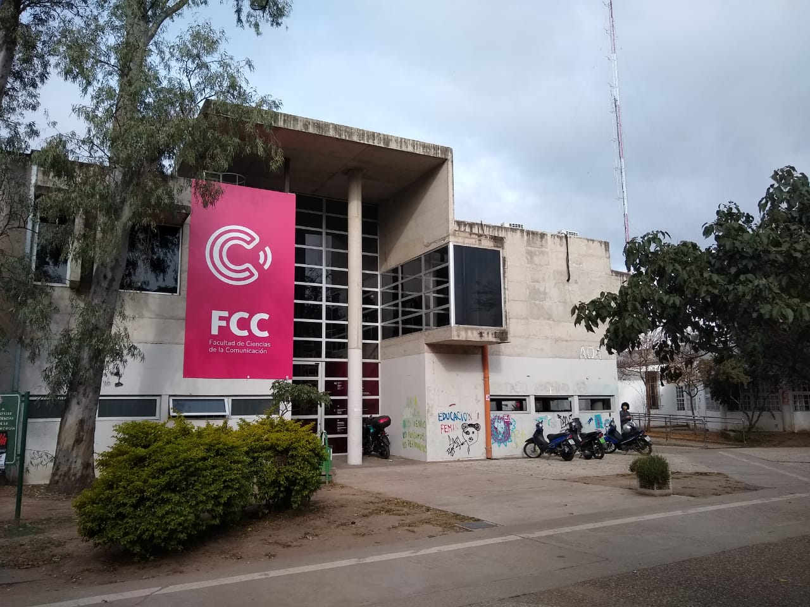

FUNCIONES
AREA DE SISTEMAS:
- Realizar el mantenimiento correctivo, preventivo y predictivo de lo equipos.
- Optimizar el rendimiento y sintonía del sistema operativo
- Instalar, configurar y dar mantenimiento a los servicios como son redes, proxy, Aula virtual y servidores varios.
- Preservar la seguridad y mantener la privacidad de los datos de los usuarios.
- Respaldar la información mediantes copias de seguridad (físicas y en la nube), periódicas
- Evaluar la necesidades de recursos (memoria, discos, procesadores, etc.) y aprovisionarlos si fuera necesario.
- Instalar y actualizar utilidades de software.
- Diseño y configuración de la red que interconecta todos los edificios (cableada y wifi).
- Atención a los usuarios ( consultas, resolución de problemas, preguntas frecuentes, asesoría técnica, etc.)
- Administración de correos UNC y MyUNC; Aulas Virtuales; cuentas en Guaraní.
Las funciones que desarrolla el Departamento de sistemas son las siguientes:
 
